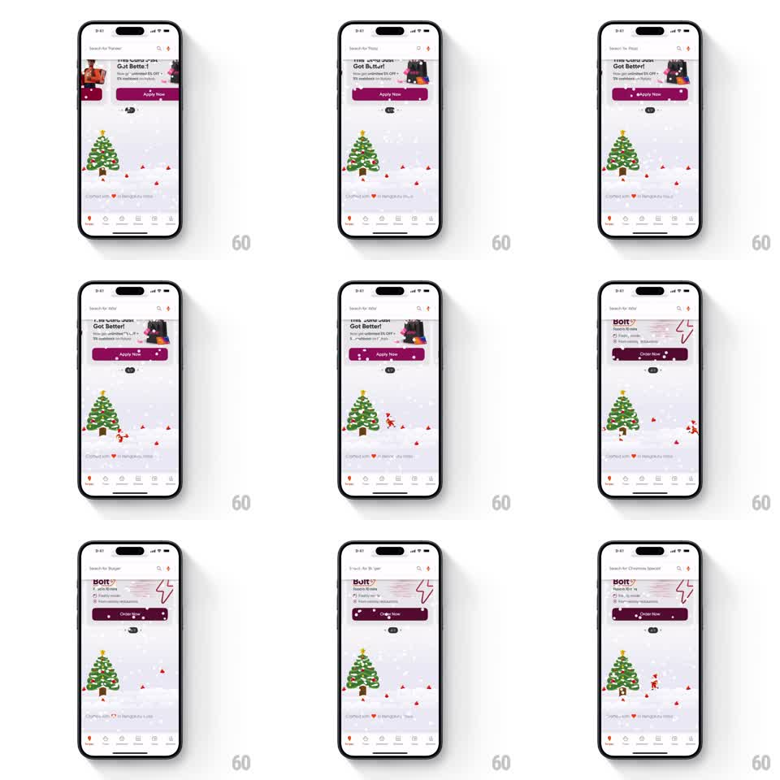

Media
Frame-by-frame

Rebuild this interaction 1:1: Swiggy's Christmas footer - snow falls over a festive footer scene with a decorated tree and a swinging Santa, while the search bar above cycles auto-typed placeholder dish names.

Rebuild this interaction 1:1: Swiggy's Christmas footer - snow falls over a festive footer scene with a decorated tree and a swinging Santa, while the search bar above cycles auto-typed placeholder dish names.
## Integration
Integration: stack-agnostic spec - springs given as stiffness/damping, timed motions as duration + curve; map every value to your framework and animation library of choice.
## Scene
A food listing screen ("The Great Jalebi Got Butter!" promo card with Apply Now button, a Bolt deals card with an Order Now button) above a Christmas footer: a snow-dusted scene with a decorated tree, tiny red ornaments and gifts, a small swinging Santa, and "Crafted with love in Bengaluru, India" text, over the tab bar.
## Motion spec
Pattern: ambient snow with auto-typing placeholder, continuous.
- Snow particles fall across the footer scene (30-40 small flakes, varying sizes and fall speeds 2-4s per fall, slight horizontal drift, looping).
- Santa swings gently on his perch (+-8deg pendulum, 2s, ease-in-out).
- The tree's ornaments twinkle (individual bauble highlights fading in and out, 1.5s staggered).
- In the search bar, the placeholder types itself character by character ("Search for 'Jalebi'", then other dish names, 60ms per character), holds 1.2s, deletes (30ms per character), and types the next.
- The promo cards above are static; all motion lives in the footer scene and search placeholder.
## Calibration
- Snow stays inside the footer's bounds - it never drifts over the cards above.
- The typing cadence has human-ish jitter (+-20ms), not a metronome.
## Reduced motion
Static scene; placeholder swaps without typing.
## Don't miss
- The Santa swing and the snow are independent loops - do not synchronize them.
- The deletion is faster than the typing, as in real typewriter patterns.